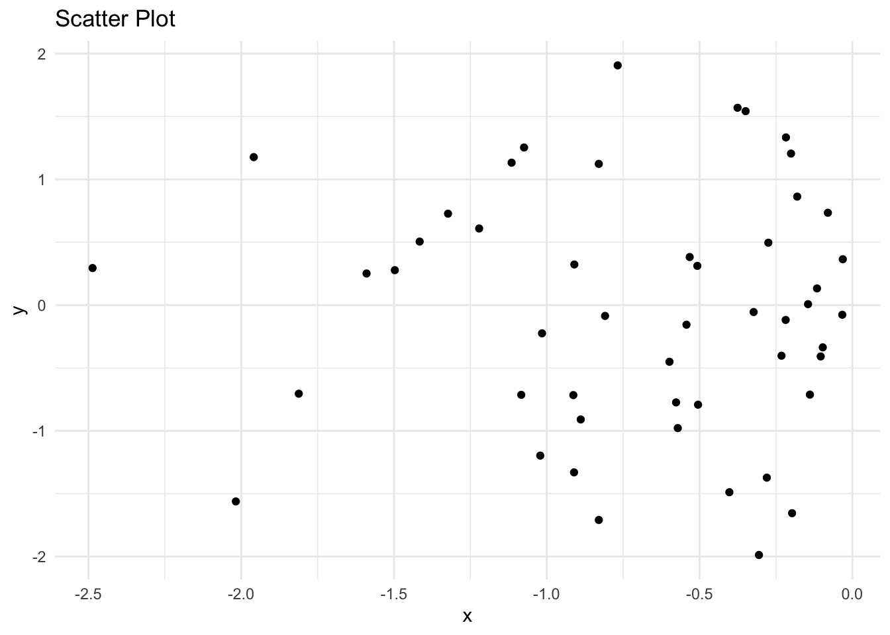
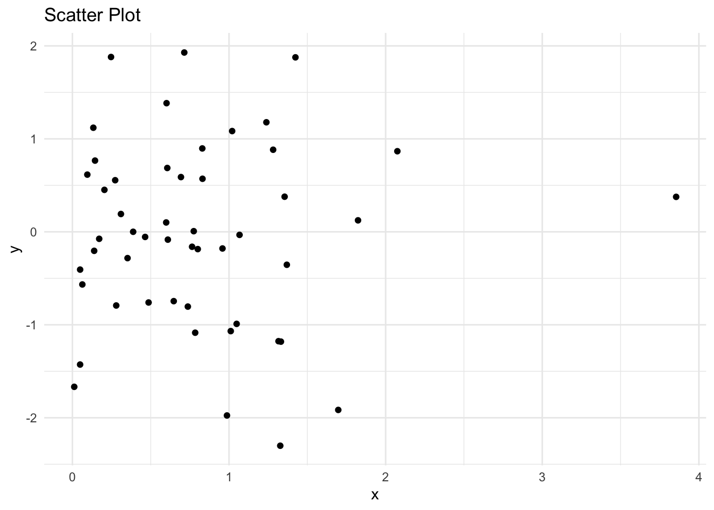
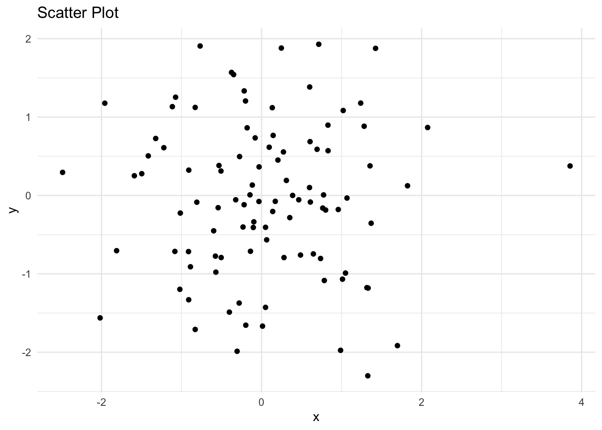
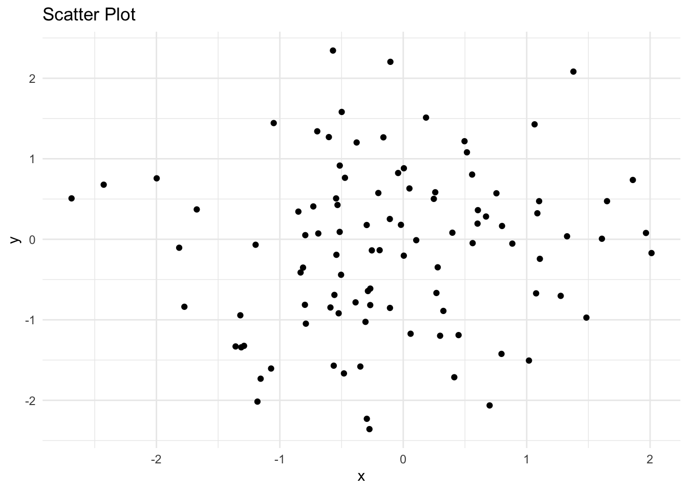

First, I’ll define the function I used for Challenge 9. The function creates a scatter plot with arguments of a dataframe, two variables, and a plot title.
Code
# Function to plot a scatter plotscatter <-function(data, x, y, title) {# Convert x and y to symbols x <-substitute(x) y <-substitute(y)# Create the scatter plot using ggplot2 plot <-ggplot(data, aes(x =!!x, y =!!y)) +geom_point() +labs(title = title, x =deparse(x), y =deparse(y)) +theme_minimal()# Print the scatter plotprint(plot)}
Define dataframe
Next, we need to define a dataframe, df, to use.
Code
# define a dataframeset.seed(489) # set seedx <-rnorm(100)y <-rnorm(100)df <-data.frame(x = x, y = y)
Examples
Now, we’ll use my scatter function with purrr. purrr will apply scatter to different subsets of df.
Example 1
Code
# Apply scatter function to each subset of datadf_list <-split(df, df$x >0) # Split data frame based on x > 0scatter_list <-map(df_list, ~scatter(.x, x, y, title ="Scatter Plot"))


In the first example, split(df, df$x > 0) splits df into 2 subsets based on whether x is greater than 0. The resulting list df_list contains two dataframes. Then, map() applies scatter to each dataframe in the list, creating a list of scatterplots: scatter_list.
Example 2
Code
# Apply scatter function to multiple data framesdf2 <-data.frame(x =rnorm(100), y =rnorm(100))df_list <-list(df, df2)scatter_list <-map(df_list, ~scatter(.x, x, y, title ="Scatter Plot"))


In the second example, we create another data frame df2. We then combine df and df2 into a list df_list, and map() applies scatter to each dataframe in the list, again generating a list of scatter plots scatter_list.
Source Code
---title: "Challenge 10"author: "Danny Holt"description: "purrr"date: "7/6/2023"format: html: df-print: paged toc: true code-fold: true code-copy: true code-tools: truecategories: - challenge_10---```{r}#| label: setup#| warning: false#| message: false#| include: falselibrary(tidyverse)library(ggplot2)knitr::opts_chunk$set(echo =TRUE, warning=FALSE, message=FALSE)```## First steps### `scatter`First, I'll define the function I used for Challenge 9. The function creates a scatter plot with arguments of a dataframe, two variables, and a plot title.```{r}# Function to plot a scatter plotscatter <-function(data, x, y, title) {# Convert x and y to symbols x <-substitute(x) y <-substitute(y)# Create the scatter plot using ggplot2 plot <-ggplot(data, aes(x =!!x, y =!!y)) +geom_point() +labs(title = title, x =deparse(x), y =deparse(y)) +theme_minimal()# Print the scatter plotprint(plot)}```### Define dataframeNext, we need to define a dataframe, `df`, to use.```{r}# define a dataframeset.seed(489) # set seedx <-rnorm(100)y <-rnorm(100)df <-data.frame(x = x, y = y)```## ExamplesNow, we'll use my `scatter` function with `purrr`. `purrr` will apply `scatter` to different subsets of `df`.### Example 1```{r}# Apply scatter function to each subset of datadf_list <-split(df, df$x >0) # Split data frame based on x > 0scatter_list <-map(df_list, ~scatter(.x, x, y, title ="Scatter Plot"))```In the first example, `split(df, df$x > 0)` splits `df` into 2 subsets based on whether `x` is greater than 0. The resulting list `df_list` contains two dataframes. Then, `map()` applies `scatter` to each dataframe in the list, creating a list of scatterplots: `scatter_list`.### Example 2```{r}# Apply scatter function to multiple data framesdf2 <-data.frame(x =rnorm(100), y =rnorm(100))df_list <-list(df, df2)scatter_list <-map(df_list, ~scatter(.x, x, y, title ="Scatter Plot"))```In the second example, we create another data frame `df2`. We then combine `df` and `df2` into a list `df_list`, and `map()` applies `scatter` to each dataframe in the list, again generating a list of scatter plots `scatter_list`.